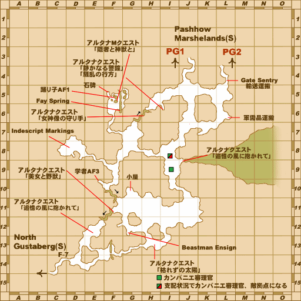

Description
Grauberg (S) is an outdoor area in The Gustaberg Front.
Map

Maps retain their source annotations. Follow the mission steps for Zenith requirements; modern reference markers do not grant access. Instance galleries show alternative layouts, not a single continuous route.
Story walkthroughs in this area
| Story | Mission / quest |
|---|---|
| WotG B-02 | Fires of Discontent |
| WotG B-03 | Light in the Darkness |
| WotG B-05 | Storm on the Horizon |
| WotG 41-2 | Her Memories: Of Malign Maladies |
| WotG W-08 | The Forbidden Path |
| WotG 42 | Forget Me Not |
| WotG 43 | Pillar of Hope |
| WotG 44 | Glimmer of Life |
| WotG 45 | Time Slips Away |
| WotG 46 | When Wills Collide |
| WotG 47 | Whispers of Dawn |
| WotG 48 | A Dreamy Interlude |
| WotG 50 | Fork in the Road |
| WotG 51 | Maiden of the Dusk |
| WotG 54 | Lest We Forget |
References
External references describe their own server or retail rules. Documented Zenith changes take precedence.
Map credits: Map 1 — FF11 Database — Japanese annotations. Original game maps © SQUARE ENIX; redrawn maps retain the credited authorship and license.